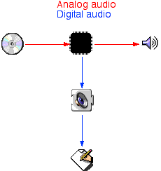
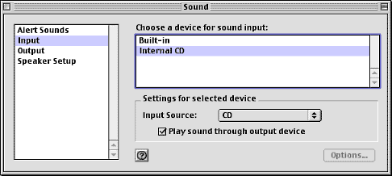
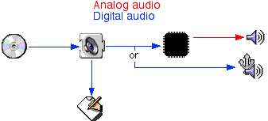

|
|
Starting
with Mac OS 9.0 there is a new way of playing CD audio -- digitally. Pure digital data is read from the CD, played
through the Sound Manager as a PCM (Pulse Code Modulation -- standard uncompressed audio) data stream, and then
sent out to the speakers (where your ears require that it be
converted back to an analog signal).
This Technote describes how an application uses the
new digital CD audio support and what a CD or DVD driver
needs to do to support playing audio digitally.
Updated: [Apr 3 2000]
|
The way it was
For as long as the Macintosh has had a built in
CD-ROM, the audio has been played as an analog sound stream.
The CD-ROM drive would output analog sound, just like a
microphone, and the Mac would record that audio, optionally
passing it through to the speakers (play through).
A diagram of the flow of audio data (from the
CD-ROM only for simplification) looks like this:

The audio data was read by the CD-ROM drive and
converted to analog audio inside the CD-ROM drive. From
there the analog audio would go to the sound hardware on the
Macintosh. It would then be converted back to digital data
and given to the Sound Manager. The Sound Manager would then
pass the audio to any application that was recording the CD
audio input source. If play through was turned on, the sound
hardware would automatically route the analog sound back out
to the speakers (or headphones), requiring no CPU
intervention or overhead to hear the audio. The multiple
conversions of the audio introduced the possibility of noise
and reduced sound quality as well as making it difficult to
precisely know, to a sample accuracy, what was being
played.
That has all changed with Mac OS 9.0.
Back to top
The way it is now
Starting with Mac OS 9.0, on all ROM-in-RAM Macs
(currently the iMac, iMac DV, iBook, Blue & White Power
Macintosh G3, Power Macintosh G4, and Bronze Keyboard PowerBook
G3 Series) there is a new sound input device called "Internal CD." When
Internal CD is the selected input source, the Macintosh
reads digital data directly from the CD and plays it as
high-quality digital audio from CD using standard Sound Input
Manager recording calls. However, the Internal CD input
driver does not have to be selected to allow the user listen
to the CD, it only has to be selected to record from.

Instead of using the digital to analog converters
built into the CD-ROM drive (which may be of questionable
quality to audio purists), the audio is read as digital
data, much like a normal file would be read off of a CD.
This digital audio is then passed to the Sound Manager which
plays it, as it would play any sound.
This allows the sound to be played by the built-in
sound hardware and the built-in speakers of the Macintosh,
or out via some other hardware, such as USB speakers.
Previously it was not possible for the internal audio CD to
be played out via third-party hardware.
The flow of audio data now looks like this:

However, this also means that the CPU is now
running code that plays the audio. A very minor performance
penalty is extracted for this new functionality. The
measured statistics are about 0.5% CPU usage on a PowerBook
G3 300MHz when the sound output setting is set to 44.1 kHz.
This number doesn't include the cost of the Sound Manager
sound channel which is needed for the sound output.
Back to top
How your application needs to change
There is no longer an option of selecting the
internal CD from the Built-in input driver. If the user's
CPU is able to support digital CD audio the option of doing
it the old analog way has been removed for a consistent user
interface between different Macintoshes.
If you would like to give the users of your
application the ability to record digital CD audio using the
new Internal CD input source, you will have to choose it as
the recording source. It is a completely different sound
input driver, not a different input source of the Built-in
sound input device. You will need some method of selecting
different input sources because you cannot assume that it
will be the default input device.
Apple does not recommend that you have the
user use the Sound control panel to change the default input
source unless the user wants a global change. Typically this
is the not the case, as only one application wants to record
from the Internal CD input source -- most applications
will want to record from the microphone or sound in input.
Therefore having the user change the system wide behavior is
the wrong thing to do.
Having your own interface element for this is the
preferred method for changing all sound settings in your
application. The proper way to choose the Internal CD input
source is to construct a list of all sound input drivers
(using repeated calls to SPBGetIndexedDevice)
to populate a menu or a list. The application should store
these settings in its preferences and configure the sound
input driver and sound output component accordingly each
time the application starts. Do not have the user set
these settings in the Sound control and rely on them always
being the default sound settings.
There are a few key points that should be pointed
out regarding the Internal CD input source:
- Because it is a separate input device, the user can
record from the microphone in one application (for
instance, Speech Recognition), and listen to CD audio at
the same time.
- The Internal CD input device will be busy when an
application is recording from the CD. Be prepared to deal
with this gracefully. It will not be busy when it
is just playing a CD.
- Play through is always on. It is hoped that once most
applications are updated to be able to deal with not
having the
siPlayThruOnOff selector
supported that it will be removed. For now you should
update your code to be able to deal with not being able
to check or set the play through setting of an input
source. Remember, the siPlayThruOnOff
selector is optional, so not all input devices support
it.
Back to top
How your CD/DVD driver needs to change
Developers of CD or DVD drivers may wish to support
the new Internal CD input driver. To do this the driver
needs to be updated to call some functions in the Internal
CD PPC code fragment. Calling these functions from 68K code
is not supported. If you wish to do that, you are squarely
in unsupported territory - watch your step.
These functions are called by the CD/DVD driver and
are how digital audio is passed from the driver to the
Internal CD driver when the CD/DVD driver gets an
AudioPlay control call.
|
Note:
The term 'frame' in DigitalCDSound.h refers to a
Sample Frame as defined in Sound Manager
terminology, in this case a 4-byte sample, stereo,
16-bit per channel.
In CD terminology, a 'frame' is defined as the
smallest addressable unit which is 1/75th of a
second, or 2352 bytes, or 588 stereo 16-bit per
channel samples. This technical note refers to a CD
'frame' as a 'block'.
Sound Manager Reference:
Sampled-Sound
Data
|
The exported functions of the DigitalCDSoundLib
are:
typedef void (*ReadMoreCDAudioProcPtr)(SInt32 refCon);
typedef STACK_UPP_TYPE(ReadMoreCDAudioProcPtr) ReadMoreCDAudioUPP;
void CDSoundMain( CDSoundInfoTable *infoTable, SInt32 drvrRef );
OSErr SetupSound( UInt32 bytesInRingBuffer,
ReadMoreCDAudioUPP readMoreCDUPP,
SInt32 refCon,
Component outputDevice,
UInt32 numMarkers );
OSErr TeardownSound( void );
void CDSoundTerminate ( void );
void StartSound( void );
void StopSound( void );
void PlayRing( void );
void PauseRing( void );
SInt32 RingBytesAvailable( void );
void WriteAudioToRing( SInt16 *newData, UInt32 numFrames );
void StitchAudioIntoRing( Ptr wholeBuff,
UInt32 buffFrames,
UInt32 overlapFrames );
void InvalidateRingBuffer( void );
SInt32 GetVolume( void );
OSErr SetVolume( SInt32 volume );
OSErr Set3DSoundOn( void );
OSErr Set3DSoundOff( void );
void SetTrackMarker( UInt32 marker );
void GetCurrentTrackMarker( UInt32 *marker,
UInt32 *framesBeyondMarker ); |
The usage, and general ordering, of these routines
is as follows:
- Call
CDSoundMain which will install the
"Internal CD" sound input driver and create other needed
internal structures.Pass a valid
CDSoundInfoTable with the
versionNumber field set to 1. For
drvrRef, pass in the reference number of the
driver that will be reading the digital audio. Ignore the
values of the fields in CDSoundInfoTable
when CDSoundMain returns. You cannot call
this function at interrupt time, call it only at task
time.
- Call
SetupSound. This allocates all
necessary data structures. Pass this function the size in
bytes of the ring buffer you want to use. Also pass a
pointer to the UPP for the
ReadMoreCDAudio function, and an optional
refCon that will be passed to the
ReadMoreCDAudio function. The second to the
last parameter contains the component reference of an
output device to use. Set it to nil to use
the default output device. The last parameter contains
the number of track markers to allocate. This must be
called at task level, and will return
controlErr if the current execution level is
not task level.
|
Note:
SetupSound can return any of a
number of errors due to conditions such as being out of
memory, incorrect hardware, etc. Be prepared to deal with
errors.
|
- Start reading audio CD data.
- Call
StartSound. This will start the
output running. Don't worry, the user won't hear anything
until you put some data into the ring buffer. This
function cannot be called at interrupt time, it must be
called at task time.
- Once a CD read completes, call
WriteAudioToRing or
StitchAudioIntoRing - use
WriteAudioToRing if you are writing the
first data, or if the CD drive in use does not require
stitching. Use StitchAudioIntoRing if the CD
drive requires stitching, and this is not the first bit
of data to play (in other words, there should be overlap
from a previous read). You can call this function at
interrupt time.
|
Note:
If stitching is required by the CD drive, you
must read overlapping data from the drive. For instance, if
one read you get 75 blocks starting at address 01:15:50 (one
minute, 15 seconds, 50 blocks), the next read should overlap
by some amount. I have found that an overlap of 7 blocks
gives good results. Thus the next read would read 75 blocks
starting at address 01:16:43 (7 blocks shy of a full
second). You need to pass the StitchAudioIntoRing
the number of frames of overlap that you're using.
|
PlayRing and PauseRing can
be used to start and stop the audio at any time.
PlayRing will start the sound as soon as
possible. PauseRing will stop the sound from
playing as soon as possible. These functions can be
called at interrupt time.- Call
RingBytesAvailable to determine if
you should queue another read of CD data. If there is
enough space in the ring buffer, queue another read.
Otherwise, stop reading. See ReadMoreCDAudio
below for how to get the data reads started again. This
function can be called at interrupt time.
ReadMoreCDAudio is a function that is
called by the sound interrupt code every time an audio
interrupt happens. The call is made at interrupt time.
This is the way that the audio task will alert you that
you should read more data from the CD. Because the CD
drive will be able to read data faster than the sound
plays it, eventually the function getting the CD audio
will no longer have room to insert more audio data into
the ring buffer. Using RingBytesAvailable,
determine the amount of available space in the ring
buffer. If there's enough to get more data from the CD,
and if data is not currently being read off the CD, queue
another read.- Call
InvalidateRingBuffer whenever you
are playing some user-specified different data, such as a
mid-track switch. Call this function to instantly
invalidate any existing audio data in the ring buffer.
This call also removes all previously set track
marker information. This function can be called at
interrupt time.
- Call
StopSound to stop the sound output
from happening. All sound will immediately stop. Use this
when there's no more data to play. This function can be
called at interrupt time.
- Call
TeardownSound to deallocate all
data structures, including the ring buffer. Don't call
any ring buffer manipulation routines after calling this
before calling SetupSound again. This
function must be called at task level, and will return
controlErr if the current execution level is
not task level.
- Call
CDSoundTerminate to remove the
sound driver if your device will no longer be offering
digital CD audio, for instance, if your USB or FireWire
CD drive has been disconnected. This function cannot be
called at interrupt time and must be called at task
time.
These functions are used to control how the audio
plays or give you feedback about where in the audio stream
you are.
- Use
GetVolume to get the volume for the
CD audio stream (only). The volume is passed back as a
long in the format 0x0RRR0LLL where
RRR is the right volume and LLL
is the left volume. The value of RRR and
LLL ranges from 0x000 to
0x100. Do not call this function at
interrupt time as it may be made interrupt unsafe at some
point in the future.
- Use
SetVolume to get and set the volume
for the CD audio stream (only). The volume is passed in
as a long in the format 0x0RRR0LLL where
RRR is the right volume and LLL
is the left volume. The value of RRR and
LLL must be in the range of
0x000 to 0x100. Do not call
this function at interrupt time as it may be made
interrupt unsafe at some point in the future.
- Use
Set3DSoundOn to turn on 3D spatial
enhancement. Do not call this function at interrupt time
as it may be made interrupt unsafe at some point in the
future.
- Use
Set3DSoundOff to turn off 3D spatial
enhancement. Do not call this function at interrupt time
as it may be made interrupt unsafe at some point in the
future.
|
Note:
Set3DSoundOn and
Set3DSoundOff will return an error if 3D sound
enhancement is not supported by the hardware.
|
- Use
SetTrackMarker to mark the next data
being written to the ring. You can pass any arbitrary 4
byte value. This value will be passed back if that data
is currently being played when a
GetCurrentTrackMarker call is made. This
function can be called at interrupt time.
- Use
GetCurrentTrackMarker to retrieve
the marker that was last passed as audio data is being
played. Along with the marker that was passed, a frame
count is returned that tells how far beyond the marker
has been played. This function can be called at interrupt
time.
There are a significant number of data structures
and memory allocations associated with digital CD audio. To
minimize the use of system resources that are not needed,
your driver should not call SetupSound until it
is actually going to play a CD. Likewise, it should call
TeardownSound as soon as it is done playing the
CD so that system resources can be freed for other
applications.
Back to top
Additional Notes & Comments
The Only Way
The only way that users will be able to hear their
CDs through USB speakers is for the CD/DVD driver to support
digital audio. If you are the author of a CD or DVD driver,
you should work to add this functionality to your driver as
quickly as possible.
The Apple CD/DVD driver allows for digital CD audio
only on Macintoshes which have ATAPI CD or DVD drives. It
does not support SCSI CD drives. Macintoshes with SCSI CD
drives using the Apple CD/DVD driver will behave as they
always have.
The iBook only does digital CD audio, as its
sound chip does not have an analog to digital converter
(remember, it doesn't have a built in microphone either).
All iBooks will play audio CD using the above API. If a user
installs a third-party CD driver on the iBook, it is
imperative that it supports digital CD audio or the user
will loose the ability to hear their audio CDs.
The Power Macintosh G4 (AGP Graphics) only does
digital CD audio as there is no internal CD audio analog
connection on the motherboard. Though the computer does
support analog recording via an external microphone, it does
not have an internal analog connection.
3D Sound
The 3D sound enhancement that is offered is a
simple filter. It is one of a class of filters called
"stereo spreaders." This type of enhancement works well with
some types of music, and not so well with others, so make
sure you allow the user to choose their personal preference
of on or off.
Because of the additional signal from the stereo
spreader is being added back into the original signal, the
overall signal is reduced to avoid the possibility of
clipping. This has the effect of reducing the overall volume
level of the sound when the 3D effect is turned on (and a
raising of the volume when it is turned off). The user can
compensate for this by turning up the volume on the Mac, the
CD, or their speakers.
The current implementation of the 3D-Stereo
component takes about 1.4% of the CPU on a 300MHz PowerBook
G3.
Back to top
Summary
As you can see, applications do not have to do
anything special and will just continue to work --
assuming that they were properly coded with the correct
error handling and user interface. If you do not have a user
interface for sound preferences, but instead rely on the
Sound control panel, please remedy this as soon as
possible.
Drivers have a bit more work to allow for digital
CD audio, but the benefit of allowing the user to play their
CDs through their USB speakers definitely makes this effort
worthwhile.
References
TN1124: New Sound Input Driver
Features
TN1108: Unknown Sound Features
Back to top
Downloadables
Back to top
|